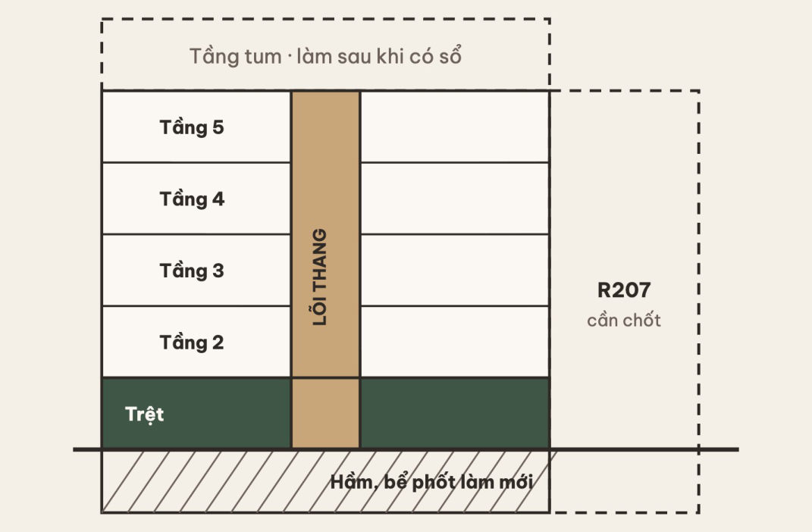
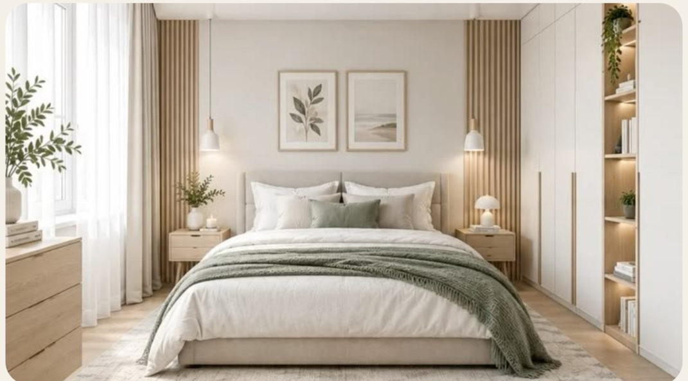
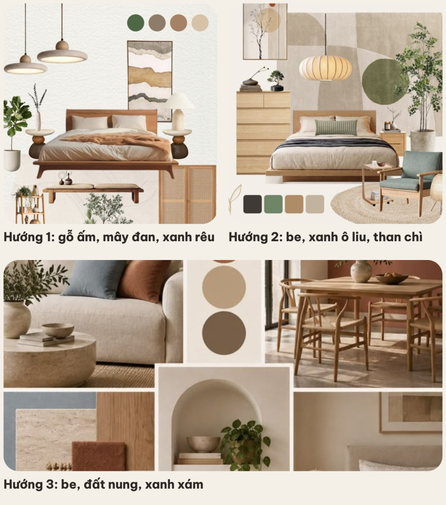

03 căn nhà ở Bãi Kem nên làm gì trong 10 năm tới?
Tài liệu tư vấn gửi Chủ nhà về R201, R203, R205 và cơ hội ghép thêm căn R207. Bản 4: mô hình tính theo từng tháng, mỗi phương án một cấu trúc riêng.
Ruby Bãi Kem Boutique · Phú Quốc · 18/11/2026
Đề xuất: xây khối 53 phòng có điều kiện, rồi chọn giữa thuê quản lý và tự vận hành bằng số thật
Các trang sau giải thích lần lượt từng ý, theo thứ tự một dự án sẽ trải qua.
Thị trường
Dài hạn thuận lợi nhờ hạ tầng mới. 2027-2029 cạnh tranh mạnh vì nhiều phòng mới ra cùng lúc.
Có nên xây?
Chỉ khi giá trị căn nhà sau hoàn thiện được thẩm định. Nếu chỉ đếm tiền mặt, để thô cho thuê vẫn nhỉnh hơn.
Ai vận hành?
Thuê đơn vị quản lý (PA3) thu về nhiều nhất, 62,5 tỷ. Tự vận hành (PA4) ít hơn khoảng 8 tỷ, đổi lại gia đình sở hữu doanh nghiệp.
PA3 hay PA4?
Khoảng cách 8 tỷ đến từ cấu trúc chi phí, không phải may rủi. PA4 đáng chọn khi có toà thứ 2 hoặc giá phòng bám 900 nghìn.
Xây thế nào?
Vốn cơ sở 27 tỷ, trần 28 tỷ. Chỉ khởi công khi đủ 04 điều kiện. R207 là tùy chọn.
Giữ quyền ra sao?
Tiền, kênh bán, quyền quyết định và đường lui do Chủ nhà nắm, dù chọn PA3 hay PA4.
Nam Phú Quốc có nền tảng dài hạn tốt, nhưng 2027-2029 sẽ là giai đoạn cạnh tranh mạnh
Tóm tắt từ báo cáo thị trường Nam Phú Quốc 2027-2042, có đối chiếu với số liệu đã công bố.
Từ khoảng 2030
Nhà ga sân bay mới, tàu điện và trung tâm hội nghị cùng đi vào hoạt động. Báo cáo ước công suất toàn thị trường có thể đạt 70-75% vào năm 2030.
2027-2029
Nhiều khách sạn lớn khai trương quanh APEC. Giá phòng và công suất của cơ sở nhỏ nhiều khả năng bị ép trong 2-3 năm.
Hai nhận định này không mâu thuẫn, chỉ khác khung thời gian. Câu hỏi chính là giữ được tài sản và dòng tiền qua 2027-2029 hay không.
Nguồn: Báo cáo thị trường Nam Phú Quốc 2027-2042 (11/2026); số khách 10 tháng đối chiếu với Bộ VHTTDL.
Khách đến tăng đều, nhưng phòng mới tăng nhanh hơn nên công suất bình quân còn thấp
Hạ tầng là phần chắc chắn nhất, cơ chế đặc thù nên xem là cơ hội cộng thêm
Trung tâm hội nghị APEC hoàn thiện, hội trường 4.030 chỗ.
Nhà ga sân bay mới (T2) khai thác giai đoạn 1, hướng tới 20-24 triệu khách/năm vào 2030.
Tàu điện 17 km khai thác thương mại.
Báo cáo dự phóng 16-18 triệu lượt khách hàng không, nguồn cung 40-45 nghìn phòng, công suất lý thuyết 70-75%.
Cơ chế đặc thù (miễn thị thực 180 ngày, thẻ tạm trú dài hạn) hiện còn là đề án. Nếu được thông qua, phòng ở dài ngày có bếp có lợi nhất.
Khách hội nghị hợp với khách sạn nhỏ ở vài nhóm: phòng tràn khi resort kín, đoàn 20-50 người, nhân sự sự kiện ở dài ngày. Báo cáo khuyên không kỳ vọng quá 20-30% doanh thu.
Mốc hạ tầng theo báo cáo, chưa đối chiếu văn bản chính thức.
Tiền lệ Đà Nẵng cho thấy nhịp sau APEC: tăng nóng, thanh lọc, rồi hồi phục
Đà Nẵng sau APEC 2017: khách tăng mạnh khoảng 18 tháng. Giữa 2019 có thêm gần 6.000 phòng, công suất về khoảng 50%, mất vài năm để hồi phục.
Báo cáo dự báo cơ sở nhỏ đạt 25-40% công suất, giá thực nhận thấp nhất khoảng 820 nghìn/đêm (2028).
Cung cầu gặp nhau khi hạ tầng mới chạy đủ.
Giá thực nhận lên khoảng 1 triệu (2030), 1,48 triệu (2035).
Tài sản cần làm mới để giữ phân khúc.
04 phương án, mỗi phương án một cấu trúc tiền riêng
R201, R203, R205 đã thanh toán đủ. Bản tính giả định ghép thêm R207 thành khối 04 căn, 53 phòng. Mua R207 là tùy chọn, chưa chốt.
Để thô cho thuê
Cho thuê nguyên trạng 140 triệu/tháng cả khối, tăng 4%/năm. Không bỏ vốn. Hết hạn phải phá dỡ và sửa lại.
Xây xong rồi cho thuê
Chủ nhà xây, cho một bên thuê nguyên toà 300 triệu/tháng, tăng 4%/năm.
Xây xong, thuê đơn vị quản lý
Đơn vị quản lý nhận 12% doanh thu cho back office, cộng thưởng 2-4% theo biên lợi nhuận. Tư vấn ban đầu 5.000 USD.
Xây xong, tự vận hành
Gia đình lập công ty, tự dựng back office. Giám đốc lương 50 triệu cộng 20% phần lời vượt tiền thuê PA2.
CÁCH ĐỌC SỐ
Số tiền là phần của Chủ nhà (75%), tính đến cuối năm thứ 10 (10/2037), tỷ đồng. Mốc so sánh: 30 tỷ tiền nhàn rỗi gửi ngân hàng 6,5%/năm thành 45 tỷ phần Chủ nhà.
Giả định chung: chỉ tính tiền phòng, công suất và giá theo 3 mùa
| Mùa | Tháng | Công suất | Giá thuần/đêm |
|---|---|---|---|
| Cao điểm | 12, 1, 2, 3 | 75-85% (cơ sở 80%) | 900 nghìn |
| Trung bình | 4, 7, 8, 11 | 52,5-65% (60%)* | 750 nghìn* |
| Thấp điểm | 5, 6, 9, 10 | 30-45% (37,5%) | 600 nghìn |
Bình quân năm 59%. 53 phòng cho doanh thu thuần khoảng 748 triệu/tháng (giá 2028), tăng 4%/năm. Giá thuần đã trừ hoa hồng, VAT và phí OTA.
- Bỏ hẳn doanh thu cửa hàng và pod.
- Chi phí tại khách sạn 38% doanh thu (đã khảo sát thực tế), lương tăng 7%/năm.
- Khai trương 11/2027. Năm đầu đạt 82% công suất ổn định (PA3) hoặc 70% rồi 90% (PA4).
- Thuế thu nhập doanh nghiệp 17%, thuế cổ tức 5%, quỹ thay mới đồ 3% doanh thu.
- Giá trị nhà tăng thêm: chênh lệch tiền thuê hoàn thiện và thô năm 10, vốn hoá 8%, chỉ lấy 70%.
* Mùa trung bình là giả định của người lập, cần xác minh với số thực tế.
Để thô cho thuê là cách nhẹ nhàng nhất, nhưng tài sản bị khóa 10 năm
+ ĐƯỢC
Không bỏ thêm vốn. 30 tỷ nhàn rỗi vẫn gửi ngân hàng.
Tiền về đều ngay từ năm đầu: khoảng 236 triệu/tháng phần Chủ nhà, gồm cả lãi tiền gửi.
− MẤT
Trống 6 tháng đầu và 6 tháng khi đổi khách ở năm thứ 5.
Hết hạn phải phá dỡ và sửa lại: khoảng 7,6 tỷ phần Chủ nhà (đã tính trượt giá).
Bên thuê tự sửa nhà theo ý họ. Suốt 10 năm, gia đình không xây được gì của riêng mình.
› NẾU VẪN CHỌN PA1
Duyệt thiết kế của bên thuê trước khi thi công, giữ cọc đủ để sửa lại nhà, có điều khoản thanh lý nếu họ bỏ dở.
Phần Chủ nhà cuối năm 10, đã trừ chi phí sửa nhà. Thị trường xấu vẫn còn 55 tỷ.
Xây chỉ hơn để thô nhờ giá trị căn nhà tăng thêm, và phần này chưa được thẩm định
Phần Chủ nhà cuối năm 10, tỷ đồng. Khối đặc là tiền mặt, phần sọc là giá trị nhà tăng thêm (ước tính).
Chỉ đếm tiền mặt, để thô (57,1) hơn PA3 (45,2) khoảng 12 tỷ. Cộng 17,3 tỷ giá trị nhà thì PA3 vượt lên 62,5. Nếu vốn hoá 10% thay vì 8%, phần này còn 13,8 tỷ.
PA2 · Xây xong cho thuê: tiền đều, nhưng giá thuê 300 triệu đã sát lợi nhuận của khách sạn
+ ĐƯỢC
Không phải vận hành. Tiền về đều từ năm 2: khoảng 264 triệu/tháng năm 3.
Hợp đồng 3-5 năm, hết hạn vẫn đổi hướng được.
− MẤT
Trống 6 tháng sau khai trương và 6 tháng đổi khách ở năm 5.
Lãi trước thuế của chính khách sạn này năm 3 khoảng 357 triệu/tháng. Thuê 300 triệu, bên thuê chỉ còn lời mỏng, dễ xin giảm giá.
Cuối kỳ làm mới khoảng 15% vốn xây.
Hoàn vốn năm 9.
› CÁCH GIẢM RỦI RO
Giá thuê tách mùa cao và mùa thấp, có mức sàn. Giữ cọc đủ để làm mới.
Phần Chủ nhà sau 10 năm. Thị trường xấu (thuê 240 triệu, trống lâu hơn) còn 33 tỷ.
PA3 · Thuê đơn vị quản lý: thu về nhiều nhất, đổi lại là phí 12% doanh thu trả mãi
+ ĐƯỢC
Có ngay kênh bán, quy trình và đội chuyên nghiệp. Năm đầu đạt 82% công suất ổn định.
Thưởng 2-4% tính theo biên lợi nhuận: đơn vị quản lý chỉ ăn thêm khi Chủ nhà có lời.
Năm đầu không có tháng âm tiền.
− MẤT
Phí back office khoảng 90-100 triệu/tháng, tăng theo doanh thu.
Dữ liệu khách, tài khoản OTA dễ nằm phía đơn vị quản lý nếu hợp đồng không ghi rõ.
Năng lực vận hành tích lũy ở họ, không ở gia đình.
› CÁCH GIẢM RỦI RO
Tài khoản kênh bán và dữ liệu đứng tên công ty Chủ nhà, quyền chấm dứt theo KPI, bàn giao đầy đủ khi kết thúc.
Phần Chủ nhà sau 10 năm. Hoà PA2 khi công suất bình quân từ 49%, hoàn vốn năm 8.
PA4 · Tự vận hành: doanh nghiệp thuộc về gia đình, nhưng thu về ít hơn PA3 khoảng 8 tỷ
+ ĐƯỢC
Toàn quyền giá, kênh bán, dữ liệu khách và đội ngũ.
Các con có chỗ học quản trị ngay trên tài sản nhà mình.
Hệ thống dựng xong có thể dùng lại cho toà thứ 2.
− MẤT
Back office tự dựng khoảng 120-135 triệu/tháng, đắt hơn phí 12% ở quy mô 1 toà.
Năm đầu khách đến chậm (70% công suất ổn định), có 4 tháng thấp điểm âm khoảng 45 triệu.
Phụ thuộc vào 1 Giám đốc.
› CÁCH GIẢM RỦI RO
Quỹ dự phòng cho năm đầu, lương cơ sở cộng 20% phần lời vượt tiền thuê PA2, thoả thuận chấm dứt viết sẵn từ đầu.
Phần Chủ nhà sau 10 năm. Hoà PA2 khi công suất bình quân từ 58%, hoàn vốn năm 9.
Thị trường bình thường, cả 04 cách đều hơn gửi ngân hàng. Thị trường xấu, chỉ để thô còn hơn.
Phần Chủ nhà cuối năm thứ 10, tỷ đồng. Đường nét đứt là 45 tỷ nếu gửi ngân hàng.
Thị trường xấu: công suất bình quân 44%, giá phòng thấp hơn 10%, vốn 28 tỷ, khai trương trễ 3 tháng, PA2 thuê 240 triệu và trống lâu hơn.
Tiền về mỗi tháng: PA1 và PA3 cao nhất những năm đầu, PA4 thấp nhất suốt 10 năm
Triệu đồng mỗi tháng, phần Chủ nhà, sau thuế, gồm lãi tiền gửi. Năm 1 không tính khoản hoàn VAT vốn xây.
| Phần Chủ nhà | PA1 | PA2 | PA3 | PA4 |
|---|---|---|---|---|
| Vốn bỏ ra | 0 | 20,3 tỷ | 20,9 tỷ | 21,0 tỷ |
| Mỗi tháng, năm 3 | 276 tr | 264 tr | 283 tr | 242 tr |
| Mỗi tháng, năm 10 | 466 tr | 485 tr | 486 tr | 387 tr |
| Tiền mặt cuối năm 10 | 57,1 | 35,4 | 45,2 | 36,9 |
| Giá trị nhà tăng thêm | 0 | 17,3 | 17,3 | 17,3 |
| Tổng cuối năm 10 | 57,1 | 52,7 | 62,5 | 54,2 |
| Hoàn vốn | không cần | năm 9 | năm 8 | năm 9 |
Năm 5 PA1 và PA2 giảm vì 6 tháng trống khi đổi khách thuê. Tiền mặt cuối kỳ đã trừ chi phí sửa nhà (PA1) và làm mới (PA2).
Ngoài tiền, mỗi góc nhìn nghiêng về một phương án khác nhau
| Góc nhìn | Câu hỏi | Nghiêng về |
|---|---|---|
| Nhà đầu tư | Sau 10 năm còn bao nhiêu, thị trường xấu có trụ được không | PA3 (nhiều nhất), PA1 (an toàn nhất) |
| Người mẹ | Tài sản và doanh nghiệp còn trong tay gia đình không, các con nhận lại gì | PA4 |
| Kế toán, pháp lý | Thuế và hợp đồng có đơn giản, an toàn không | PA1, PA2 |
Bảng điểm cũ (PA4 4,2 điểm) được chấm trên số của bản 2, khi PA4 còn dẫn về tiền. Số bản 4 đã đổi thứ tự đó.
PA3 hơn PA4 ở cả 6 kịch bản, khoảng cách 7-10 tỷ
Phần Chủ nhà cuối năm 10, tỷ đồng.
| Kịch bản | PA3 | PA4 | Chênh |
|---|---|---|---|
| Cơ sở · 59% | 62,5 | 54,2 | 8,3 |
| Đầu trên · 65% | 67,9 | 60,0 | 7,9 |
| ADR 900k | 70,9 | 63,9 | 7,0 |
| ADR 600k | 49,5 | 40,9 | 8,6 |
| Đầu dưới · 52% | 41,7 | 32,2 | 9,5 |
| Xấu · 44% | 34,5 | 24,1 | 10,4 |
Khoảng cách gần như không đổi khi thị trường tốt hay xấu. Nghĩa là nó đến từ cấu trúc chi phí, không phải từ may rủi thị trường.
Chạy PA3 vài năm đầu rồi chuyển sang tự vận hành từ năm 4 cũng không cứu được: 57,6 tỷ, thấp hơn giữ PA3 khoảng 5 tỷ.
Khoảng cách 8 tỷ có 3 nguồn, lớn nhất là back office tự dựng
Đi từ PA3 sang PA4, phần Chủ nhà cuối năm 10, tỷ đồng.
- Back office tự dựng, 4,2 tỷ: 95 triệu/tháng cố định cộng 3% doanh thu, đắt hơn 12% của PA3 ở quy mô 53 phòng.
- Năm đầu chậm và học việc, 2,0 tỷ: PA4 đạt 70% công suất năm đầu (PA3 82%), cộng 0,3 tỷ chi phí học và 180 triệu cố vấn.
- Thưởng Giám đốc 20%, 2,1 tỷ: khoảng 0,28 tỷ/năm từ năm 3. PA3 cũng có thưởng 2-4% nhưng nhỏ hơn.
Một tháng năm 3: cùng doanh thu 810 triệu, PA4 còn lại ít hơn 46 triệu
Cả khối, triệu đồng/tháng, năm vận hành thứ 3 (2030).
| Khoản | PA3 | PA4 |
|---|---|---|
| Doanh thu thuần | 810 | 810 |
| Chi phí tại khách sạn (38%) | 318 | 318 |
| Back office | 97 (12%) | 133 (95 tr + 3%) |
| Thưởng vận hành | 13 | 23 |
| Quỹ thay mới 3% | 24 | 24 |
| Lãi trước thuế | 357 | 311 |
Chi phí tại khách sạn giống nhau: cùng Giám đốc 50 triệu, cùng đội nhân sự.
Back office tự dựng chỉ rẻ hơn khi doanh thu vượt khoảng 1,06 tỷ/tháng
Chi phí back office theo doanh thu thuần, triệu đồng/tháng.
Ruby ở vùng 748-817 triệu, còn cách điểm hoà khoảng 30%. Muốn tới đó cần một trong ba điều:
- Giá phòng thuần bình quân trên 1 triệu/đêm.
- Thêm khoảng 20 phòng (R207 hoặc tầng tum).
- Một toà thứ 2 dùng chung back office.
Kể cả khi toà thứ 2 gánh một nửa phần cố định, PA4 lên 60,4 tỷ, vẫn dưới PA3. Toà 2 làm PA4 đáng cân nhắc, chưa làm PA4 hơn PA3.
Năm đầu, PA4 có 4 tháng thấp điểm âm tiền, PA3 thì không
Tiền về phần Chủ nhà mỗi tháng, năm vận hành đầu (11/2027 - 10/2028), triệu đồng, chưa tính hoàn VAT.
Tháng 5, 6, 9, 10 năm 2028, PA4 âm khoảng 45 triệu/tháng. Gộp cả năm vẫn dương, nhưng nếu khai trương trễ hoặc thị trường xấu, mức âm sâu tới 100-115 triệu/tháng.
PA3 chịu được công suất thấp hơn PA4 khoảng 9 điểm trước khi thua các lựa chọn khác
Công suất bình quân năm (đã ổn định) để mỗi phương án hoà với gửi ngân hàng, PA2 và PA1.
| Mốc hoà | PA3 | PA4 |
|---|---|---|
| Gửi ngân hàng | 41% | 50% |
| PA2 (thuê 300 tr) | 49% | 58% |
| PA1 (để thô) | 54% | 62% |
| Giá thuần bình quân để hoà PA1 | 680 nghìn | 786 nghìn |
Rủi ro lớn nhất chung cho cả hai là giá trị nhà và công suất, không phải vốn xây
Thay đổi phần Chủ nhà cuối năm 10 khi một giả định đổi, các giả định khác giữ nguyên.
Hai phương án nhạy gần như nhau với từng yếu tố. Chọn PA3 hay PA4 không làm dự án an toàn hơn trước thị trường. Nó chỉ quyết định ai giữ phần chênh 8 tỷ.
Những gì bảng tính không đo được lại là lý do chính để chọn PA4
| Yếu tố | PA3 | PA4 |
|---|---|---|
| Dữ liệu khách, tài khoản OTA | Phụ thuộc hợp đồng | Của gia đình |
| Năng lực vận hành | Tích lũy ở đơn vị quản lý | Tích lũy ở công ty gia đình |
| Mở rộng toà thứ 2 | Trả phí 12% lần nữa | Dùng lại back office |
| Để lại cho các con | Một tài sản cho thuê quản lý | Một doanh nghiệp đang chạy |
| Rủi ro con người | Đổi đơn vị quản lý theo hợp đồng | Phụ thuộc 1 Giám đốc |
| Ràng buộc | Hợp đồng tối thiểu 3 năm | Thoả thuận chấm dứt viết sẵn |
Mốc hoàn vốn an toàn 7 năm chỉ đạt khi giá hoặc công suất cao hơn cơ sở
| Kịch bản | PA3 | PA4 |
|---|---|---|
| Cơ sở (59%, giá 600-900 nghìn) | năm 8 | năm 9 |
| Đầu trên (65%) | năm 7 | năm 8 |
| Giá thuần 900 nghìn cả năm | năm 6 | năm 7 |
| Đầu dưới (52%) | quá 10 năm | quá 10 năm |
Hoàn vốn ở đây là năm tiền mặt cộng dồn từ khách sạn bù đủ vốn bỏ ra. Không tính giá trị nhà tăng thêm.
Quy tắc chọn: mặc định PA3, chuyển sang PA4 khi có ít nhất 1 trong 3 điều kiện
Chọn PA4 nếu
- Có kế hoạch toà thứ 2 trong 3-5 năm để dùng chung back office.
- Giá thuần thực tế các khách sạn cùng phố bám mức 900 nghìn trở lên.
- Chủ nhà xác định để lại doanh nghiệp cho các con là mục tiêu chính, chấp nhận thu ít hơn khoảng 8 tỷ.
Nếu chọn PA3, hợp đồng phải có
- Tài khoản OTA, website, Google Maps, phần mềm và dữ liệu khách đứng tên công ty Chủ nhà.
- Phí tính trên tiền đã về tài khoản; thưởng theo biên lợi nhuận, không theo doanh thu.
- Quyền chấm dứt khi trượt KPI 2 quý liền, 90 ngày bàn giao đầy đủ.
- Báo giá chính thức 12% và thang thưởng trước 28/02/2027.
04 căn ghép thành một khối 53 phòng, dùng chung một lõi thang

Tầng 2 đến 5: 53 phòng, mỗi phòng 20-22 m².
Tầng trệt: sảnh, quầy kiêm lễ tân, giặt sấy. Khách tự nhận phòng ngoài giờ. Bản tính không tính doanh thu cửa hàng hay pod.
Hầm và bể phốt làm mới hoàn toàn. Tầng tum để trống, làm sau khi có sổ.
Một mẫu phòng sáng, ấm, dùng chung cho cả 53 phòng

Nội thất lớn đóng sẵn: giường gỗ, tủ quần áo, WC. Phần này đã nằm trong đơn giá 12 triệu/m².
Đồ rời: đèn vải dạng lồng đèn, cây xanh chậu gốm, thảm cói, tranh khung gỗ.
03 hướng phối màu, cùng một nền trắng ấm và gỗ tự nhiên

Ảnh tham khảo sưu tầm, bản quyền thuộc tác giả gốc. Chỉ dùng để thống nhất phong cách.
Vốn hoàn thiện 100% cho 04 căn: cơ sở 27 tỷ, trần 28 tỷ
Vốn xây cơ sở cả khối, phần Chủ nhà khoảng 20,3 tỷ. Trần 28 tỷ dùng cho kịch bản xấu.
Đơn giá 12 triệu/m² đã gồm điện nước, PCCC và nội thất lớn. 2.100 m² nhân 12 triệu là 25,2 tỷ; phần còn lại cho thiết kế, giấy phép và đồ rời. Chuẩn bị khai trương thêm 0,72 tỷ.
| Điểm dễ đội giá | Cách xử lý |
|---|---|
| Phú Quốc thiếu thợ | Tổng thầu trọn gói có đội sẵn trên đảo, giá cố định, lo chỗ ở cho thợ. |
| Nội thất đội giá | Một mẫu phòng duy nhất, mua ở Bình Dương và TP.HCM, chở ra một lần. |
| 02 căn lệch cao độ 1 m | Chốt bản vẽ ghép trước khi đấu thầu, giám sát độc lập kiểm tra kết cấu. |
| Chưa có báo giá thật | Ít nhất 03 báo giá trọn gói đúng phạm vi 12 triệu/m², giá tốt nhất dưới trần. |
Vốn tăng từ 27 lên 28 tỷ chỉ làm phần Chủ nhà giảm khoảng 1,3 tỷ: ít hơn nhiều so với rủi ro công suất.
Chỉ khởi công khi đủ 04 điều kiện
Nếu một điều kiện không đạt, dự án dừng và chỉ mất chi phí hồ sơ, tối đa khoảng 0,84 tỷ cho cả khối. Các mốc ngày là đề xuất.
Ban quản lý khu Sun chấp thuận bằng văn bản việc ghép căn và làm lại hầm.
Giá trị căn nhà sau hoàn thiện được đơn vị độc lập thẩm định, đủ để xây có lợi hơn để thô (tăng thêm từ khoảng 23 tỷ cả khối).
Hồ sơ PCCC cho phương án ghép 04 căn được thẩm duyệt.
Có 03 báo giá tổng thầu, giá tốt nhất dưới trần 28 tỷ.
Khởi công sau tháng 4/2027 nhiều khả năng không kịp APEC.
Trước APEC. Tầng tum làm sau khi có sổ.
R207 không nằm trong 04 điều kiện. Mua nếu giá hợp lý, quyết định riêng.
Dù PA3 hay PA4, Chủ nhà giữ 04 quyền then chốt
04 quyền này áp dụng cho cả PA3 và PA4, kể cả khi người vận hành là người lập đề xuất này.
Quyền giữ tiền
Mọi khoản thu về thẳng tài khoản công ty. Người vận hành chỉ có quỹ tạm ứng có giới hạn, khoản chi lớn cần 02 chữ ký.
Quyền giữ kênh bán
Tài khoản Agoda, Booking, website, Google Maps và phần mềm quản lý đều đứng tên công ty.
Quyền quyết định
Vay vốn, đổi mô hình, bán dưới giá sàn, tuyển quản lý: chỉ Chủ nhà quyết.
Quyền thay người
Được tiếp quản bất cứ lúc nào, 90 ngày bàn giao, người vận hành không được kéo nhân sự đi theo.
Mỗi tháng, Chủ nhà chỉ cần xem một chỉ số: công suất phòng
| Đèn | Điều kiện (12 tháng gần nhất) | Việc cần làm |
|---|---|---|
| Xanh | Từ 59% trở lên (kế hoạch) | Vận hành bình thường. |
| Vàng | Dưới 59%, hoặc 1 tháng thấp hơn kế hoạch tháng đó quá 10 điểm | Xem lại giá phòng, kênh bán, chi phí. |
| Đỏ | Dưới ngưỡng hoà PA2 kéo dài 02 quý: PA3 49%, PA4 58% | Cân nhắc chuyển sang cho thuê lại. |
Năm đầu so với kế hoạch từng tháng (bình quân 49% với PA3, 41% với PA4), vì khách sạn mới luôn cần thời gian. Các tháng thấp điểm 5, 6, 9, 10 so với mức 30-45%.
03 CÁCH TỰ ĐỐI CHIẾU SỔ SÁCH
1. Số đêm phòng trên phần mềm, tiền các kênh trả về và sao kê ngân hàng phải khớp nhau.
2. Số bộ ga gối đem giặt khớp với định mức theo số đêm phòng bán.
3. Mỗi quý có một khách bí mật ở thử, và so giá với 3-5 khách sạn trên phố Ruby.
Hôm nay chưa cần quyết định xây, chỉ cần duyệt bước kiểm tra 04 điều kiện
Xây có điều kiện. PA3 làm phương án mặc định, PA4 nếu có 1 trong 3 điều kiện ở trang quy tắc chọn.
Tối đa khoảng 0,84 tỷ cho cả khối, giải ngân theo từng điều kiện.
Chưa ký thuê quản lý, chưa đặt cọc nhà thầu, chưa mua nội thất, chưa làm tầng tum.
| Việc | Phụ trách | Hạn |
|---|---|---|
| Văn bản chấp thuận của Sun | Haji | 15/01 |
| Thẩm định giá trị căn nhà | Haji | 31/01 |
| Hình thức công ty, thuế | Kế toán thuế | 31/01 |
| Thẩm duyệt PCCC | Haji, tư vấn PCCC | 15/02 |
| Khảo sát công suất, giá 3-5 khách sạn phố Ruby | Haji | 15/02 |
| 03 báo giá tổng thầu | Haji | 28/02 |
| Báo giá chính thức đơn vị quản lý | Haji | 28/02 |
| Quyết định mua R207 (tùy chọn) | Chủ nhà | 28/02 |
| Quyết định xây hay dừng, PA3 hay PA4 | Chủ nhà | Đầu 03/2027 |
Haji phụ trách chính dù Chủ nhà chọn PA3 hay PA4
Kinh nghiệm: quản lý khách hàng doanh nghiệp tại Insider One (nền tảng dữ liệu khách hàng) và điều hành Golf House Vietnam.
Xây hệ thống từ đầu
Kênh đặt phòng, marketing, nhân sự, kế toán dựng ngay từ ngày đầu và thuộc về công ty của Chủ nhà.
Đội ngũ và cách quản trị
Có sẵn đội ngũ và cách điều hành. Hướng dẫn thế hệ kế thừa để các con tiếp quản khi sẵn sàng.
Công nghệ, dữ liệu khách
Quản lý phần mềm, kênh bán và dữ liệu khách hàng, để khách quay lại và giảm phụ thuộc phí kênh.
Phần Chủ nhà thu ít hơn trong 10 năm nếu tự vận hành thay vì thuê quản lý. Đây là con số cần cân với giá trị của một doanh nghiệp gia đình.
Ràng buộc ở PA4: lương cơ sở 50 triệu cộng 20% phần lời vượt tiền thuê PA2, không vượt thì không thưởng. Chủ nhà giữ 04 quyền, thoả thuận chấm dứt viết sẵn từ đầu.
Giả định cần xác minh trước khi quyết
| Giả định | Đang dùng | Ảnh hưởng |
|---|---|---|
| Công suất, giá mùa trung bình | 60%, 750 nghìn | ±10% công suất = ±6 tỷ |
| Giá trị nhà tăng thêm | 17,3 tỷ phần Chủ nhà | Bỏ đi thì PA1 dẫn đầu |
| Mốc hoàn vốn 7 năm | Nguồn chưa rõ | Bản tính ra 8-9 năm |
| Back office PA4 | 95 tr/tháng + 3% | Nguồn chính của chênh 8 tỷ |
| Chi phí học việc PA4 | 0,3 tỷ + cố vấn 180 tr | Khoảng 2 tỷ cùng năm đầu chậm |
| Phí PA3 | 12% + thưởng 2-4% | 15% thì PA3 còn 60,0; 10% thì 64,1 |
| Tiền thuê PA2 | 300 tr/tháng | Sát lợi nhuận khách sạn |
Mô hình: 132 tháng từ 11/2026, lãi gửi 6,5%/năm cộng dồn tháng, phần Chủ nhà 75%. Code: mo-hinh/model.py, run6.py, run7.py. Nguồn thị trường: Báo cáo Nam Phú Quốc 2027-2042 (11/2026).